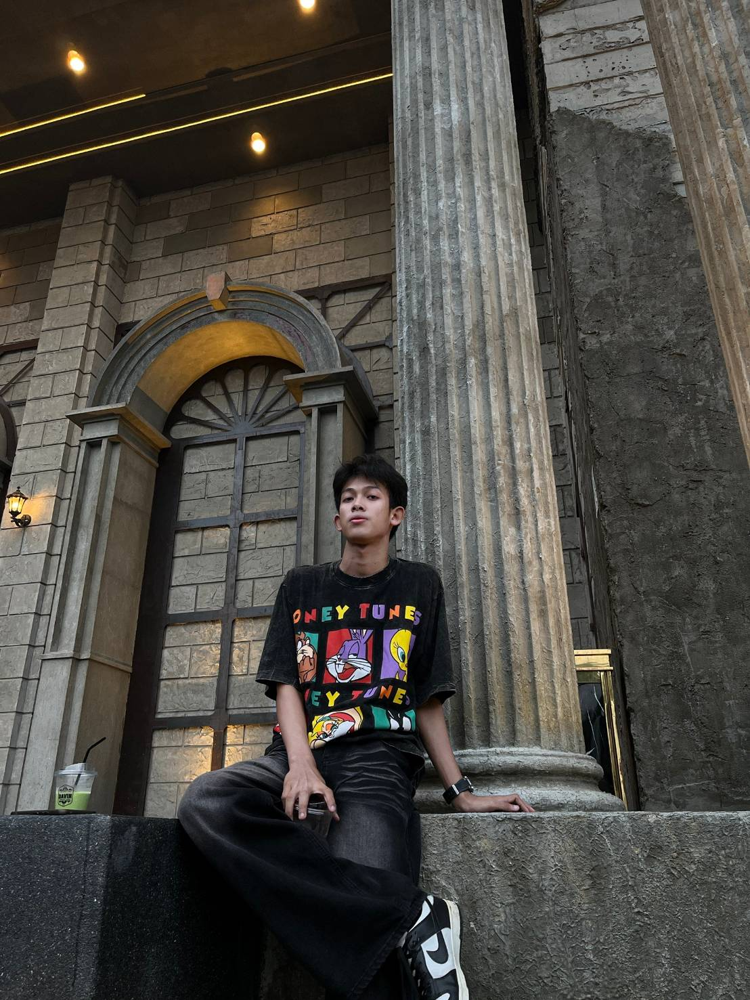

หน้าแรก
ตารางเรียน
ประวัติ

ประวัติตนเอง
นาย จิรายุ เซ็นโพธิ์ดังเจดีย์
ชื่อเล่น วี
อายุ 17 ปี เกิดเมื่อวันที่ 21/08/2007
งานอดิเรก ชอบเล่นเกม,เล่นกีฬา,เที่ยวนอกบ้าน
ศึกษาอยู่ที่:โรงเรียนเตรียมอุดมศึกษา สุวินทวงศ์
สาขาที่เรียน : ทวิศึกษา คอมพิวเตอร์ธุรกิจ
สีที่ชอบ ฟ้า ดำ ขาว
มีพี่น้อง 4 คน เป็นคนรอง
ช่องทางการติดต่อ: jirxyu_7
Phone: 082-543****
gamil : dielewsmc***@gmail.com